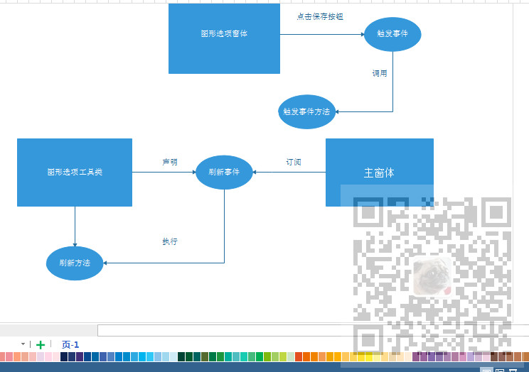

原文出处:本文由博客园博主霸道流氓提供。
原文连接:https://www.cnblogs.com/badaoliumangqizhi/p/11676655.html
原文连接:https://www.cnblogs.com/badaoliumangqizhi/p/11676655.html
场景
C#中委托与事件的使用-以Winform中跨窗体传值为例：
https://blog.csdn.net/BADAO_LIUMANG_QIZHI/article/details/100150700
参考上面的博客。
需求是在图形选项窗体中刷新主窗体的图。
注：
博客主页：
https://blog.csdn.net/badao_liumang_qizhi
关注公众号
霸道的程序猿
获取编程相关电子书、教程推送与免费下载。
实现
首先是图形选项窗体，即发起方。
先要声明刷新事件(此事件声明在图形选项工具类DataChartHelper中)：
public static event EventHandler OnRefreshChart;
然后图形选项窗体的保存按钮事件中要调用刷新事件时需要触发：
if (this.Confirm("保存成功") == DialogResult.OK)
{
Common.DataChart.DataChartHelper.TriggerRefreshChart(); //触发图形刷新事件
this.Dispose();
}
此时会触发在图形选项工具类中的TriggerRefreshChart(),回到工具类中：
public static void TriggerRefreshChart()
{
if (OnRefreshChart != null)
{
OnRefreshChart(null, System.EventArgs.Empty);
}
}
此时需要在主页面进行图的刷新。在主页面窗体的窗体加载事件中进行事件订阅：
Common.DataChart.DataChartHelper.OnRefreshChart -= DataChartHelper_OnRefreshChart;
Common.DataChart.DataChartHelper.OnRefreshChart += DataChartHelper_OnRefreshChart;
此时就会执行当前主页面的方法DataChartHelper_OnRefreshChart：
private void DataChartHelper_OnRefreshChart(object sender, EventArgs e)
{
DataChartHelper.RefreshPane(this.zedGraphControl1);
}
此方法会执行具体的操作，具体操作是调用工具类中的刷新方法。
具体流程图示
